18 Multiple Metric Predictors
18.1 SAT
18.1.1 SAT vs expenditure
Does spending more on education result in higher SAT scores? Data from 1999 (published in a paper by Gruber) can be used to explore this question. Among other things, the data includes average total SAT score (on a 400-1600 scale) and the amount of money spent on education (in 1000s of dollars per student) in each state.
As a first attempt, we could fit a linear model (sat ~ expend). Using centering, the core of the model looks like this:
for (i in 1:length(y)) {
y[i] ~ dt(mu[i], 1/sigma^2, nu)
mu[i] <- alpha0 + alpha1 * (x[i] - mean(x))
}alpha1 measures how much better SAT performance is for each $1000 spent
on education in a state. To fit the model, we need priors on our four
parameters:
nu: We can use our usual shifted exponential.sigma: {Unif}(?, ?)alpha0: {Norm}(?, ?)alpha1: {Norm}(0, ?)
The question marks depend on the scale of our variables. If we build those into our model, and provide the answers as part of our data, we can use the same model for multiple data sets, even if they are at different scales.
sat_model <- function() {
for (i in 1:length(y)) {
y[i] ~ dt(mu[i], 1/sigma^2, nu)
mu[i] <- alpha0 + alpha1 * (x[i] - mean(x))
}
nuMinusOne ~ dexp(1/29.0)
nu <- nuMinusOne + 1
alpha0 ~ dnorm(alpha0mean, 1 / alpha0sd^2)
alpha1 ~ dnorm(0, 1 / alpha1sd^2)
sigma ~ dunif(sigma_lo, sigma_hi * 1000)
log10nu <- log(nu) / log(10) # log10(nu)
beta0 <- alpha0 - mean(x) * alpha1 # true intercept
}So how do we fill in the question marks for this data set?
sigma: {Unif}(?,?)This quantifies the amount of variation from state to state among states that have the same per student expenditure. The scale of the SAT ranges from 400 to 1600. Statewide averages will not be near the extremes of this scale. A 6-order of maginitude window around 1 gives {Unif}(0.001, 1000), both ends of which are plenty far from what we think is reasonable.
alpha0: {Norm}(?, ?)alpha0measures the average SAT score for states that spend an average amount. Since average SATs are around 1000, something like {Norm}(1000, 100) seems reasable.alpha1: {Norm}(0, ?)This is the trickiest one. The slope of a regression line can’t be much more than \(\frac{SD_y}{SD_x}\), so we can either estimate that ratio or compute it from our data to guide our choice of prior.
library(R2jags)
sat_jags <-
jags(
model = sat_model,
data = list(
y = SAT$sat,
x = SAT$expend,
alpha0mean = 1000, # SAT scores are roughly 500 + 500
alpha0sd = 100, # broad prior on scale of 400 - 1600
alpha1sd = 4 * sd(SAT$sat) / sd(SAT$expend),
sigma_lo = 0.001, # 3 o.m. less than 1
sigma_hi = 1000 # 3 o.m. greater than 1
),
parameters.to.save = c("nu", "log10nu", "alpha0", "beta0", "alpha1", "sigma"),
n.iter = 4000,
n.burnin = 1000,
n.chains = 3
) sat_jags## Inference for Bugs model at "/var/folders/py/txwd26jx5rq83f4nn0f5fmmm0000gn/T//Rtmp5K1frC/modelfeab4654749d.txt", fit using jags,
## 3 chains, each with 4000 iterations (first 1000 discarded), n.thin = 3
## n.sims = 3000 iterations saved
## mu.vect sd.vect 2.5% 25% 50% 75% 97.5% Rhat n.eff
## alpha0 966.30 10.477 945.217 959.654 966.396 973.052 987.086 1.001 3000
## alpha1 -21.40 7.370 -36.165 -26.181 -21.389 -16.622 -6.772 1.001 2700
## beta0 1092.68 45.112 1003.147 1063.878 1092.556 1121.854 1182.939 1.001 2100
## log10nu 1.51 0.328 0.823 1.295 1.524 1.744 2.105 1.001 3000
## nu 42.31 32.618 6.659 19.731 33.425 55.419 127.370 1.001 3000
## sigma 69.95 7.860 56.467 64.621 69.186 74.728 87.222 1.001 3000
## deviance 568.53 2.742 565.260 566.512 567.872 569.868 575.345 1.002 2700
##
## For each parameter, n.eff is a crude measure of effective sample size,
## and Rhat is the potential scale reduction factor (at convergence, Rhat=1).
##
## DIC info (using the rule, pD = var(deviance)/2)
## pD = 3.8 and DIC = 572.3
## DIC is an estimate of expected predictive error (lower deviance is better).diag_mcmc(as.mcmc(sat_jags))
mcmc_combo(as.mcmc(sat_jags))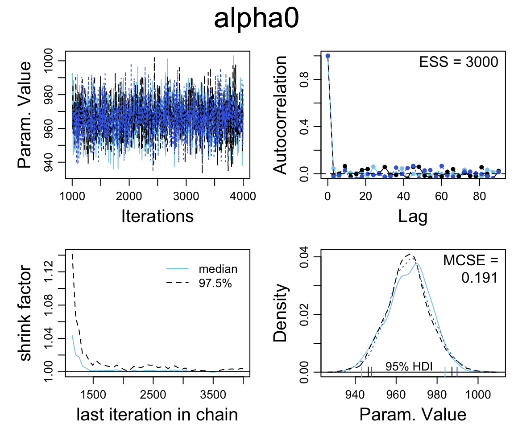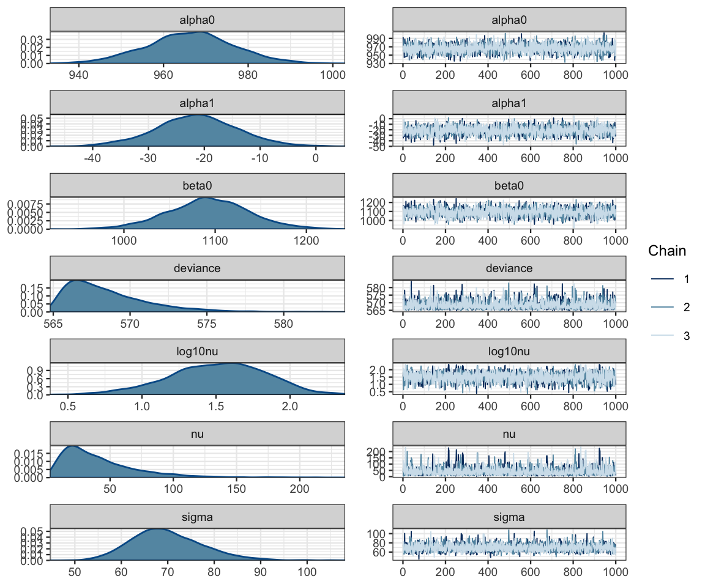
Our primary interest is alpha1.
summary_df(sat_jags) %>% filter(param == "alpha1")| param | mean | sd | 2.5% | 25% | 50% | 75% | 97.5% | Rhat | n.eff |
|---|---|---|---|---|---|---|---|---|---|
| alpha1 | -21.4 | 7.37 | -36.16 | -26.18 | -21.39 | -16.62 | -6.772 | 1.001 | 2700 |
plot_post(posterior(sat_jags)$alpha1, xlab = "alpha1", ROPE = c(-5, 5))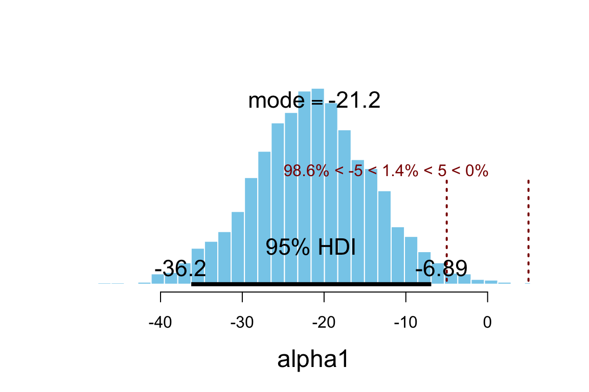
## $posterior
## ESS mean median mode
## var1 3000 -21.4 -21.39 -21.16
##
## $hdi
## prob lo hi
## 1 0.95 -36.24 -6.892
##
## $ROPE
## lo hi P(< ROPE) P(in ROPE) P(> ROPE)
## 1 -5 5 0.986 0.01367 0.0003333hdi(posterior(sat_jags), pars = "alpha1", prob = 0.95)| par | lo | hi | prob |
|---|---|---|---|
| alpha1 | -36.24 | -6.892 | 0.95 |
This seems odd: Nearly all the credible values for alpha1 are negative?
Can we really raise SAT scores by cutting funding to schools? Maybe we should look
at the raw data with our model overlaid.
gf_point(sat ~ expend, data = SAT) %>%
gf_abline(slope = ~ alpha1, intercept = ~ beta0,
data = posterior(sat_jags) %>% sample_n(2000),
alpha = 0.01, color = "steelblue")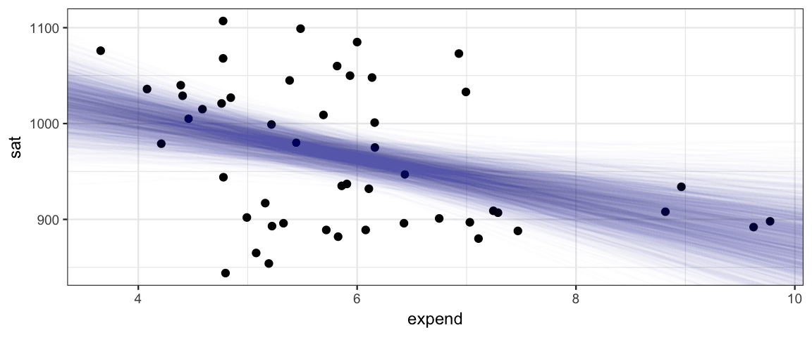
That’s a lot of scatter, and the negative trend is heavily influenced by the 4 states that spend the most (and have relatively low SAT scores). We could do a bit more with this model, for exapmle we could
* fit without those 4 states to see how much they are driving the negative trend;
* do some PPC to see if the model is reasonable.But instead will will explore another model, one that has two predictors.
18.1.2 SAT vs expenditure and percent taking the test
We have some additional data about each state. Let’s fit a model with two
predictors: expend and frac.
SAT %>% head(4)| state | expend | ratio | salary | frac | verbal | math | sat |
|---|---|---|---|---|---|---|---|
| Alabama | 4.405 | 17.2 | 31.14 | 8 | 491 | 538 | 1029 |
| Alaska | 8.963 | 17.6 | 47.95 | 47 | 445 | 489 | 934 |
| Arizona | 4.778 | 19.3 | 32.17 | 27 | 448 | 496 | 944 |
| Arkansas | 4.459 | 17.1 | 28.93 | 6 | 482 | 523 | 1005 |
Here’s our model for (robust) multiple linear regression:
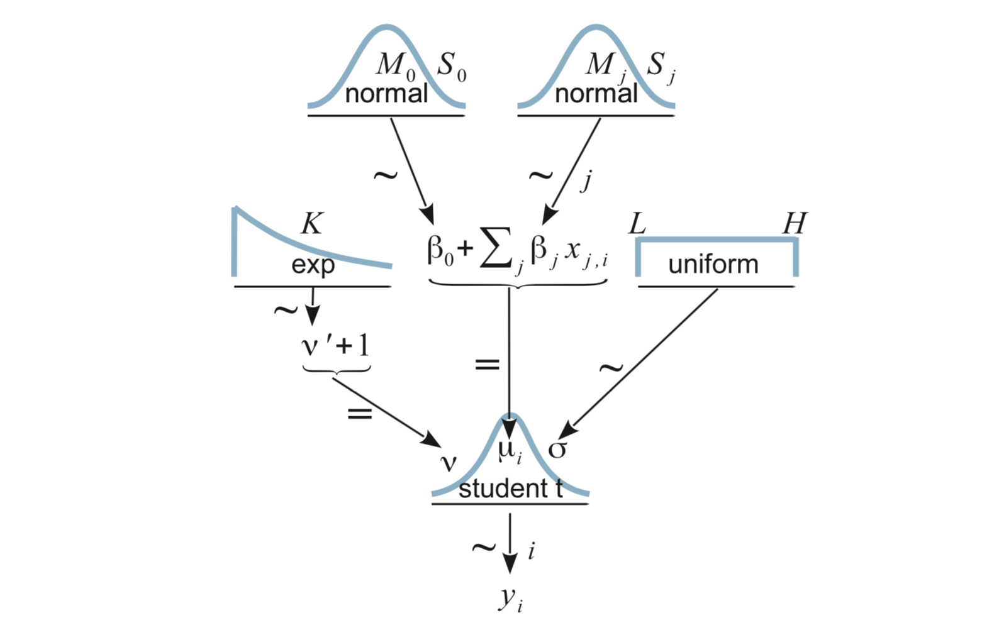
18.1.2.1 JAGS
Coding it in JAGS requires adding in the additional predictor:
sat_model2 <- function() {
for (i in 1:length(y)) {
y[i] ~ dt(mu[i], 1/sigma^2, nu)
mu[i] <- alpha0 + alpha1 * (x1[i] - mean(x1)) + alpha2 * (x2[i] - mean(x2))
}
nuMinusOne ~ dexp(1/29.0)
nu <- nuMinusOne + 1
alpha0 ~ dnorm(alpha0mean, 1 / alpha0sd^2)
alpha1 ~ dnorm(0, 1 / alpha1sd^2)
alpha2 ~ dnorm(0, 1 / alpha2sd^2)
sigma ~ dunif(sigma_lo, sigma_hi * 1000)
beta0 <- alpha0 - mean(x1) * alpha1 - mean(x2) * alpha2
log10nu <- log(nu) / log(10)
}library(R2jags)
sat2_jags <-
jags(
model = sat_model2,
data = list(
y = SAT$sat,
x1 = SAT$expend,
x2 = SAT$frac,
alpha0mean = 1000, # SAT scores are roughly 500 + 500
alpha0sd = 100, # broad prior on scale of 400 - 1600
alpha1sd = 4 * sd(SAT$sat) / sd(SAT$expend),
alpha2sd = 4 * sd(SAT$sat) / sd(SAT$frac),
sigma_lo = 0.001,
sigma_hi = 1000
),
parameters.to.save = c("log10nu", "alpha0", "alpha1", "alpha2", "beta0","sigma"),
n.iter = 4000,
n.burnin = 1000,
n.chains = 3
) sat2_jags## Inference for Bugs model at "/var/folders/py/txwd26jx5rq83f4nn0f5fmmm0000gn/T//Rtmp5K1frC/modelfeab7e14cfb5.txt", fit using jags,
## 3 chains, each with 4000 iterations (first 1000 discarded), n.thin = 3
## n.sims = 3000 iterations saved
## mu.vect sd.vect 2.5% 25% 50% 75% 97.5% Rhat n.eff
## alpha0 965.801 4.754 956.565 962.669 965.735 968.869 975.316 1.001 3000
## alpha1 12.906 4.345 4.138 10.061 12.994 15.709 21.563 1.001 3000
## alpha2 -2.885 0.225 -3.318 -3.039 -2.885 -2.734 -2.441 1.001 2000
## beta0 991.250 22.164 947.709 976.934 990.995 1006.116 1035.153 1.001 3000
## log10nu 1.379 0.367 0.661 1.118 1.393 1.642 2.048 1.001 2600
## sigma 31.586 3.807 24.563 28.947 31.409 34.047 39.761 1.001 3000
## deviance 491.060 3.010 487.234 488.830 490.421 492.588 498.706 1.001 2100
##
## For each parameter, n.eff is a crude measure of effective sample size,
## and Rhat is the potential scale reduction factor (at convergence, Rhat=1).
##
## DIC info (using the rule, pD = var(deviance)/2)
## pD = 4.5 and DIC = 495.6
## DIC is an estimate of expected predictive error (lower deviance is better).diag_mcmc(as.mcmc(sat2_jags))
mcmc_combo(as.mcmc(sat2_jags))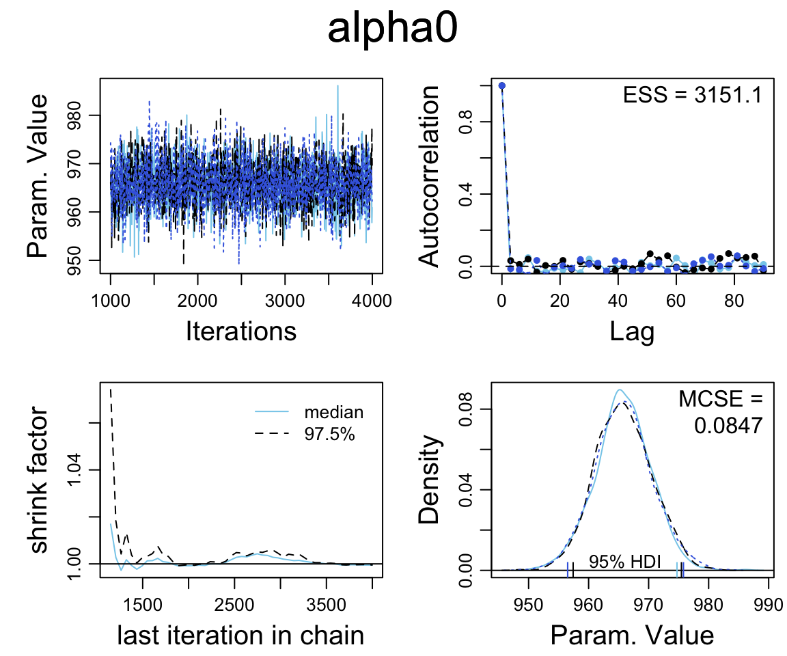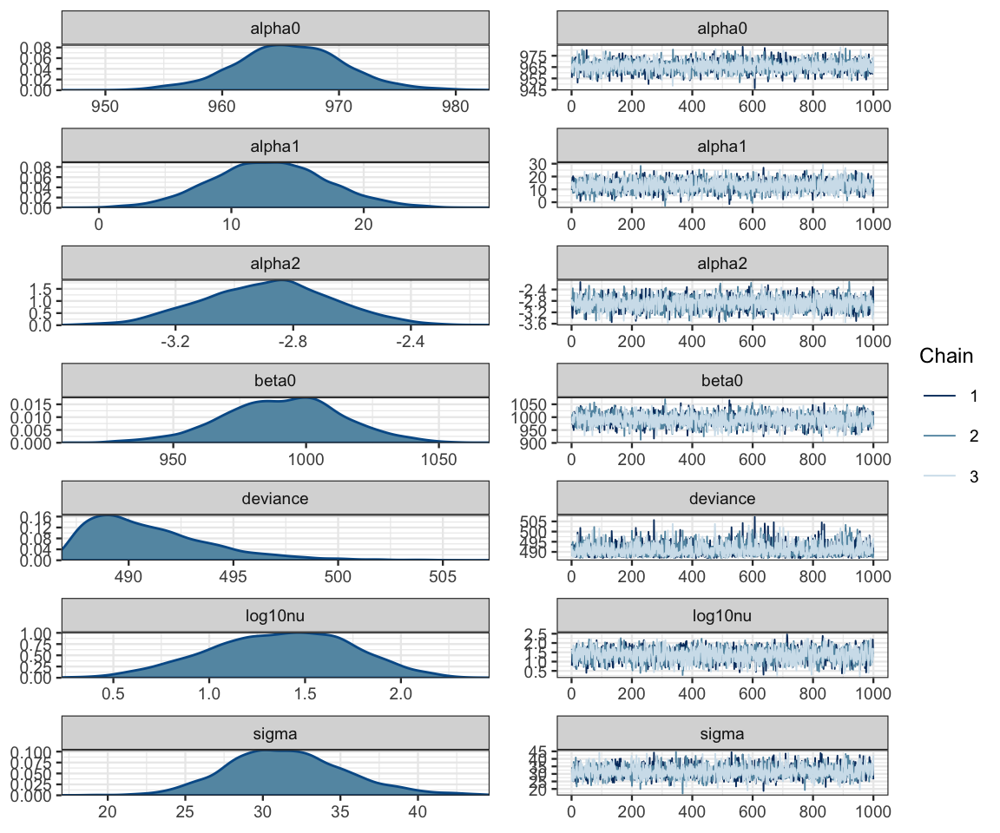
summary_df(sat2_jags) %>% filter(param == "alpha1")| param | mean | sd | 2.5% | 25% | 50% | 75% | 97.5% | Rhat | n.eff |
|---|---|---|---|---|---|---|---|---|---|
| alpha1 | 12.91 | 4.345 | 4.138 | 10.06 | 12.99 | 15.71 | 21.56 | 1.001 | 3000 |
plot_post(posterior(sat2_jags)$alpha1, xlab = "alpha1", ROPE = c(-5, 5))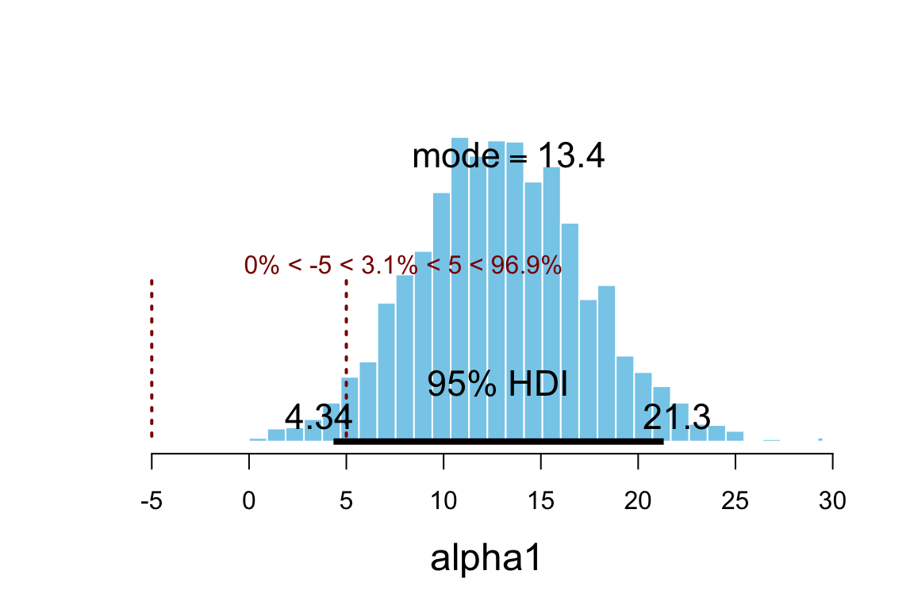
## $posterior
## ESS mean median mode
## var1 2662 12.91 12.99 13.58
##
## $hdi
## prob lo hi
## 1 0.95 3.742 21.12
##
## $ROPE
## lo hi P(< ROPE) P(in ROPE) P(> ROPE)
## 1 -5 5 0 0.03733 0.9627hdi(posterior(sat2_jags), pars = "alpha1", prob = 0.95)| par | lo | hi | prob |
|---|---|---|---|
| alpha1 | 3.742 | 21.12 | 0.95 |
summary_df(sat2_jags) %>% filter(param == "alpha2")| param | mean | sd | 2.5% | 25% | 50% | 75% | 97.5% | Rhat | n.eff |
|---|---|---|---|---|---|---|---|---|---|
| alpha2 | -2.885 | 0.225 | -3.317 | -3.039 | -2.885 | -2.734 | -2.441 | 1.002 | 2000 |
plot_post(posterior(sat2_jags)$alpha2, xlab = "alpha2")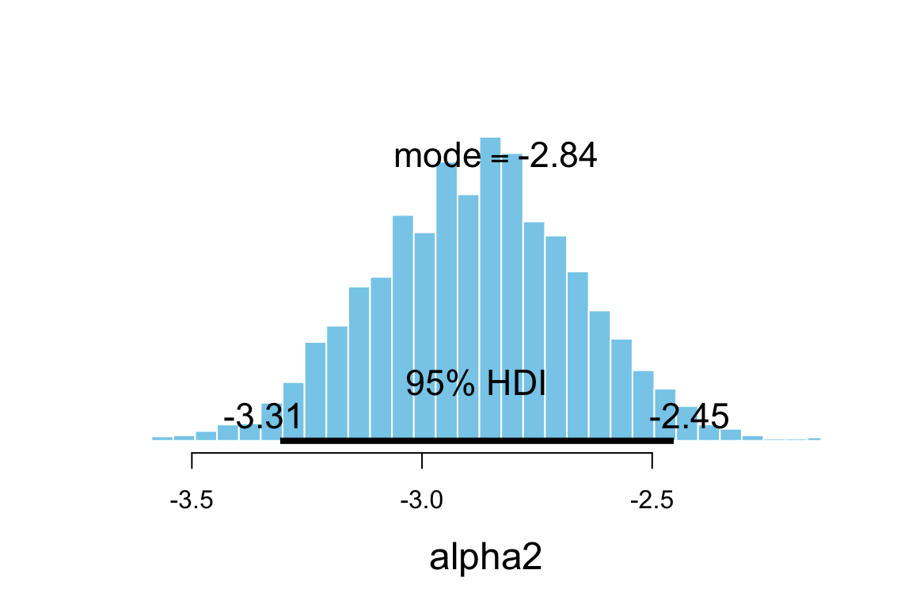
## $posterior
## ESS mean median mode
## var1 2504 -2.885 -2.885 -2.88
##
## $hdi
## prob lo hi
## 1 0.95 -3.329 -2.465hdi(posterior(sat2_jags), pars = "alpha2", prob = 0.95)| par | lo | hi | prob |
|---|---|---|---|
| alpha2 | -3.329 | -2.465 | 0.95 |
18.1.3 What’s wrong with this picture?
gf_point(sat ~ expend, data = SAT) %>%
gf_abline(slope = ~ alpha1, intercept = ~ beta0,
data = posterior(sat2_jags) %>% sample_n(2000),
alpha = 0.01, color = "steelblue")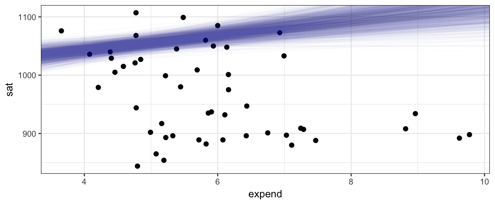
18.1.4 Multiple predictors in pictures
Interpretting coefficients in a model with multiple predictors is less straightforward that it is in a model with one predictor if those predictors happen to be correlated, as they are in the case of the SAT example above:
gf_point(expend ~ frac, data = SAT) 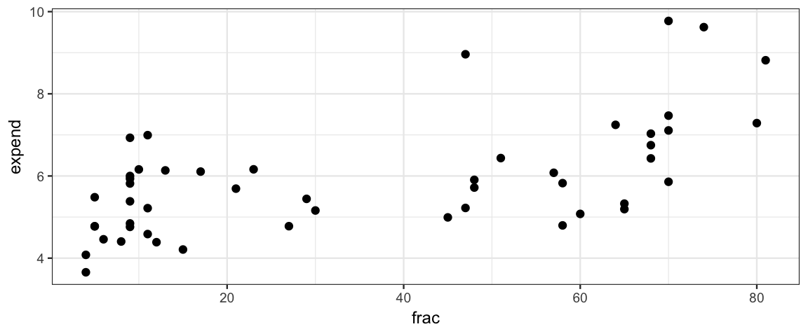
18.1.4.3 SAT model

18.1.4.4 So how do we interpret?
Interpreting the parameters of a multiple regression model
is a bit more subtle than it was for simple linear regression
where \(\beta_0\) and \(\beta_1\) could be interpreted as
the intercept and slope of a linear relationship between
the response and the predictor.
It is tempting to interpret \(\beta_i\)
as how much the response increases (on average)
if \(x_i\) is increased by \(1\)
, but this
does not correctly take into account the other variables
in the regression. Tukey described the coefficients
of a multiple regression model this way:
\(\beta_i\) tells how the response (\(Y\)) responds to change
in \(x_i\)
after adjusting for simultaneous linear change in the other predictors in the data at hand" (Tukey, 1970, Chapter 23). More recently, Hoaglin (Hoaglin, 2016) has written about the perils of theall other predictors held constant" misunderstanding of
coefficients in multiple regression.
We will continue to refine the interpretation of multiple regression coefficients as we see examples, but we can already give some reasons why the ``all other variables being held constant" interpretation fails. In many situations, it really isn’t possible to adjust one predictor without other predictors simultaneously changing. Imagine, for example, an economic model that includes predictors like inflation rate, interest rates, unemployment rates, etc. A government can take action to affect a variable like interest rates, but that may result in changes to the other predictors as well.
When predictor variables are correlated, interpretation can become subtle. For example, if \(x_1\) and \(x_2\) are negatively correlated and \(\beta_1\) and \(\beta_2\) are both positive, it is possible that an increase \(x_1\) could be associated with a in \(Y\) because as \(x_1\) increases, \(x_2\) will tend to decrease, and the negative influence on \(Y\) from the decrease in \(x_2\) could be larger than the positive influence on \(Y\) from the increase in \(x_1\). In this situation, \(\beta_1 > 0\) indicates that (which in this example are associated with a decrease in \(Y\)), \(Y\) tends to increase as \(x_1\) increases.
18.1.4.4.1 Flights example
In his 2016 eCOTS presentation , Andrew Gelman discussed a paper that used models with several predictors to study the causes of air rage (upset passengers on commercial airlines). Among the regressors were things like the presence of first class seats, whether passengers boarded from the front, size of the aircraft, length of the flight, whether the flight was international, physical characteristics of economy and first class seats, and several others. Among the conclusions of the paper were these: ``Physical inequality on airplanes – that is, the presence of a first class cabin – is associated with more frequent air rage incidents in economy class. Situational inequality – boarding from the front (requiring walking through the first class cabin) versus the middle of the plane – also significantly increases the odds of air rage in both economy and first class. We show that physical design that highlights inequality can trigger antisocial behavior on airplanes."
But since front-boarding planes with first class compartments tend to be larger, and take longer flights, one must be very careful to avoid a ``while holding all other variables fixed" interpretation.
18.2 Interaction
The model above could be called a ``parallel slopes" model since we can rewrite
\[\begin{align*} y &= \beta_0 + \beta_1 x_1 + \beta_2 x_2 + \mathrm{noise} \\ y &= (\beta_0 + \beta_1 x_1) + \beta_2 x_2 + \mathrm{noise} \\ y &= (\beta_0 + \beta_2 x_2) + \beta_1 x_1 + \mathrm{noise} \end{align*}\]
So the slope of \(y\) with respect to \(x_i\) is constant, no matter what value the other predictor has. (The intercept changes as we change the other predictor, however.)
If we want a model that allows the slopes to also change with the other predictor, we can add in an interaction term:
\[\begin{align*} y &= \beta_0 + \beta_1 x_1 + \beta_2 x_2 + \beta_3 x_1 x_2 \mathrm{noise} \\ y &= (\beta_0 + \beta_1 x_1) + (\beta_2 + \beta_3 x_1) x_2 + \mathrm{noise} \\ y &= (\beta_0 + \beta_2 x_2) + (\beta_1 + \beta_3 x_2) x_1\mathrm{noise} \end{align*}\]
18.2.1 SAT with interaction term
sat_model3 <- function() {
for (i in 1:length(y)) {
y[i] ~ dt(mu[i], 1/sigma^2, nu)
mu[i] <- alpha0 + alpha1 * (x1[i] - mean(x1)) + alpha2 * (x2[i] - mean(x2)) + alpha3 * (x3[i] - mean(x3))
}
nuMinusOne ~ dexp(1/29.0)
nu <- nuMinusOne + 1
alpha0 ~ dnorm(alpha0mean, 1 / alpha0sd^2)
alpha1 ~ dnorm(0, 1 / alpha1sd^2)
alpha2 ~ dnorm(0, 1 / alpha2sd^2)
alpha3 ~ dnorm(0, 1 / alpha3sd^2)
sigma ~ dunif(sigma_lo, sigma_hi)
beta0 <- alpha0 - mean(x1) * alpha1 - mean(x2) * alpha2
log10nu <- log(nu) / log(10)
}18.2.1.1 JAGS
library(R2jags)
sat3_jags <-
jags(
model = sat_model3,
data = list(
y = SAT$sat,
x1 = SAT$expend,
x2 = SAT$frac,
x3 = SAT$frac * SAT$expend,
alpha0mean = 1000, # SAT scores are roughly 500 + 500
alpha0sd = 100, # broad prior on scale of 400 - 1600
alpha1sd = 4 * sd(SAT$sat) / sd(SAT$expend),
alpha2sd = 4 * sd(SAT$sat) / sd(SAT$frac),
alpha3sd = 4 * sd(SAT$sat) / sd(SAT$frac * SAT$expend),
sigma_lo = 0.001,
sigma_hi = 1000
),
parameters.to.save = c("log10nu", "alpha0", "alpha1", "alpha2", "alpha3", "beta0","sigma"),
n.iter = 20000,
n.burnin = 1000,
n.chains = 3
) sat3_jags## Inference for Bugs model at "/var/folders/py/txwd26jx5rq83f4nn0f5fmmm0000gn/T//Rtmp5K1frC/modelfeab669704dd.txt", fit using jags,
## 3 chains, each with 20000 iterations (first 1000 discarded), n.thin = 19
## n.sims = 3000 iterations saved
## mu.vect sd.vect 2.5% 25% 50% 75% 97.5% Rhat n.eff
## alpha0 965.850 4.619 956.619 962.852 965.816 968.980 974.627 1.002 2000
## alpha1 1.800 8.261 -14.382 -3.641 1.797 7.296 18.418 1.001 3000
## alpha2 -4.194 0.845 -5.885 -4.740 -4.196 -3.636 -2.569 1.001 3000
## alpha3 0.225 0.140 -0.046 0.135 0.225 0.315 0.508 1.001 3000
## beta0 1103.008 73.409 956.184 1055.468 1102.679 1150.494 1248.924 1.001 3000
## log10nu 1.400 0.364 0.672 1.155 1.417 1.662 2.063 1.001 3000
## sigma 31.154 3.736 24.399 28.571 31.000 33.527 39.057 1.002 1400
## deviance 489.127 3.440 484.564 486.603 488.454 490.832 497.655 1.003 1200
##
## For each parameter, n.eff is a crude measure of effective sample size,
## and Rhat is the potential scale reduction factor (at convergence, Rhat=1).
##
## DIC info (using the rule, pD = var(deviance)/2)
## pD = 5.9 and DIC = 495.0
## DIC is an estimate of expected predictive error (lower deviance is better).diag_mcmc(as.mcmc(sat3_jags))
mcmc_combo(as.mcmc(sat3_jags))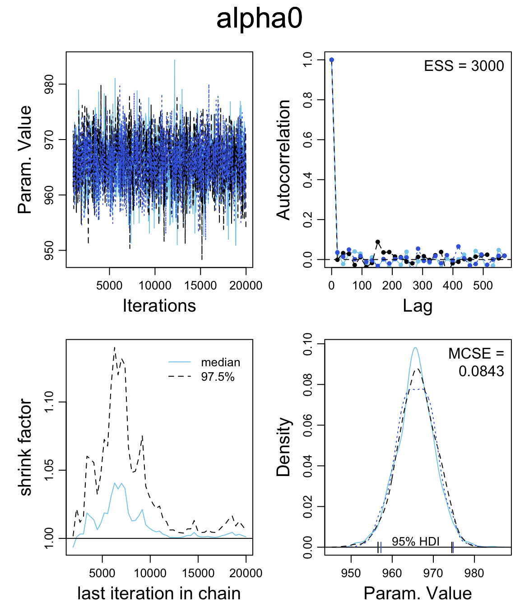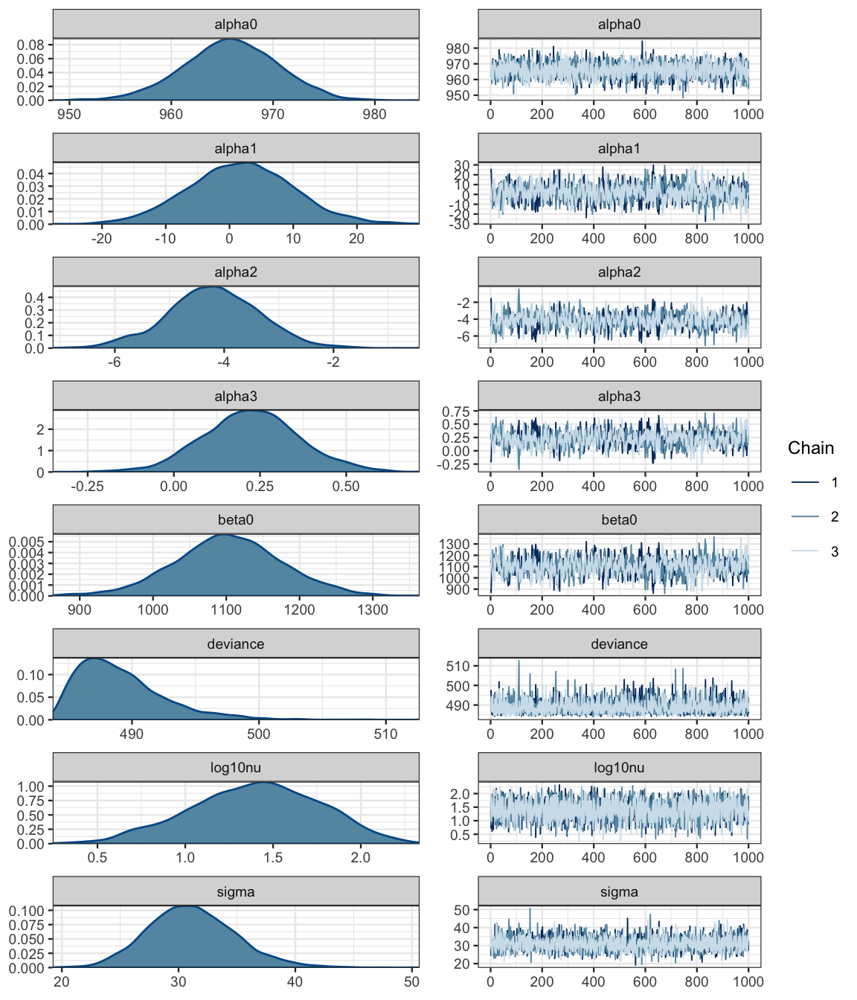
mcmc_pairs(as.mcmc(sat3_jags), regex_pars = "alpha")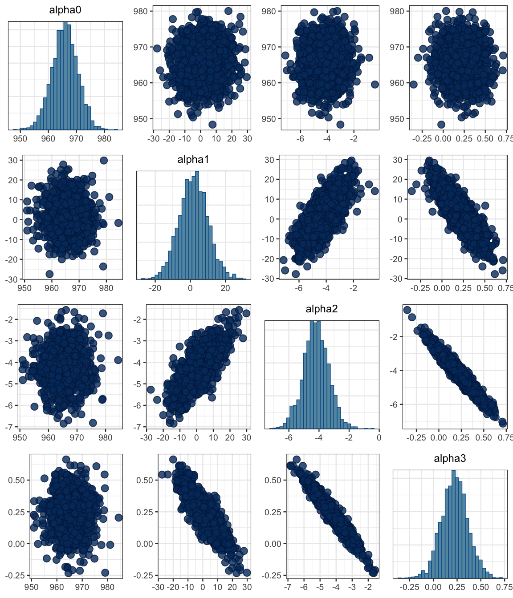
18.3 Fitting a linear model with brms
The brms package provides a simplified way of describing generalized linear models
and fitting them with Stan. The brm() function turns a terse description of the model
into Stan code, compiles it, and runs it. Here’s a linear model with sat as response, and
expend, frac, and an interaction as predictors. (The * means include the interaction
term. If we used + instead, we would not get the interaction term.)
library(brms)
sat3_brm <- brm(sat ~ expend * frac, data = SAT)## Compiling the C++ model## Start samplingsat3_stan <- stanfit(sat3_brm)Stan handles the correlated parameters a bit better than JAGS (but also takes a bit longer to compile and run for simple models).
sat3_stan## Inference for Stan model: cdbc2f76b7d44b10135d8d5c2b383017.
## 4 chains, each with iter=2000; warmup=1000; thin=1;
## post-warmup draws per chain=1000, total post-warmup draws=4000.
##
## mean se_mean sd 2.5% 25% 50% 75% 97.5% n_eff Rhat
## b_Intercept 1057.00 1.15 43.89 971.81 1027.22 1056.75 1086.88 1144.36 1454 1
## b_expend 0.64 0.21 8.15 -15.75 -4.81 0.67 6.20 16.23 1523 1
## b_frac -4.25 0.02 0.85 -5.89 -4.81 -4.23 -3.66 -2.61 1420 1
## b_expend:frac 0.24 0.00 0.14 -0.03 0.14 0.24 0.33 0.51 1337 1
## sigma 32.56 0.08 3.56 26.60 30.04 32.22 34.80 40.31 2144 1
## lp__ -251.39 0.05 1.69 -255.58 -252.27 -251.06 -250.17 -249.13 1316 1
##
## Samples were drawn using NUTS(diag_e) at Sat Apr 13 13:44:48 2019.
## For each parameter, n_eff is a crude measure of effective sample size,
## and Rhat is the potential scale reduction factor on split chains (at
## convergence, Rhat=1).mcmc_combo(as.mcmc.list(sat3_stan))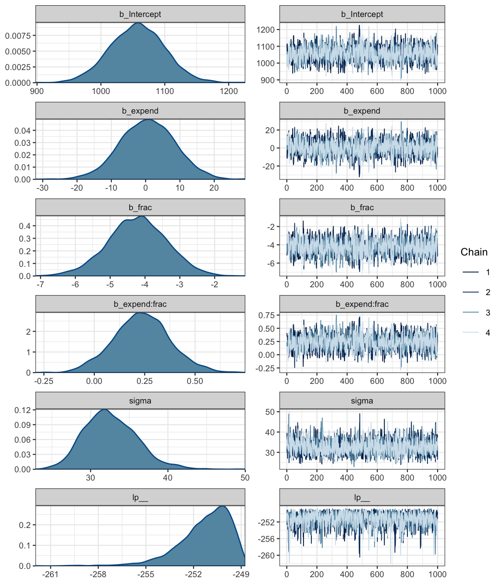
We can use stancode() to extract the Stan code used to fit the model.
brms::stancode(sat3_brm)## // generated with brms 2.7.0
## functions {
## }
## data {
## int<lower=1> N; // total number of observations
## vector[N] Y; // response variable
## int<lower=1> K; // number of population-level effects
## matrix[N, K] X; // population-level design matrix
## int prior_only; // should the likelihood be ignored?
## }
## transformed data {
## int Kc = K - 1;
## matrix[N, K - 1] Xc; // centered version of X
## vector[K - 1] means_X; // column means of X before centering
## for (i in 2:K) {
## means_X[i - 1] = mean(X[, i]);
## Xc[, i - 1] = X[, i] - means_X[i - 1];
## }
## }
## parameters {
## vector[Kc] b; // population-level effects
## real temp_Intercept; // temporary intercept
## real<lower=0> sigma; // residual SD
## }
## transformed parameters {
## }
## model {
## vector[N] mu = temp_Intercept + Xc * b;
## // priors including all constants
## target += student_t_lpdf(temp_Intercept | 3, 946, 85);
## target += student_t_lpdf(sigma | 3, 0, 85)
## - 1 * student_t_lccdf(0 | 3, 0, 85);
## // likelihood including all constants
## if (!prior_only) {
## target += normal_lpdf(Y | mu, sigma);
## }
## }
## generated quantities {
## // actual population-level intercept
## real b_Intercept = temp_Intercept - dot_product(means_X, b);
## }Some comments on the code
data {
int<lower=1> N; // total number of observations
vector[N] Y; // response variable
int<lower=1> K; // number of population-level effects
matrix[N, K] X; // population-level design matrix
int prior_only; // should the likelihood be ignored?
} transformed data {
int Kc = K - 1;
matrix[N, K - 1] Xc; // centered version of X
vector[K - 1] means_X; // column means of X before centering
for (i in 2:K) {
means_X[i - 1] = mean(X[, i]);
Xc[, i - 1] = X[, i] - means_X[i - 1];
}
} - The design matrix
Xhas a column of 1’s followed by a column for each predictor. Kis the number of coluns in the design matrix.Xcomits the column of 1’s and centers the other predictors by subtracting their means.Kcis the number of columns in this matrix (so it is one less thanK)- the compuation of
Xchappens in the for loop, which starts at 2 to omit that first column of 1’s.
- We can use
standata()to show the databrm()passes to Stan.
standata(sat3_brm) %>%
lapply(head) # truncte the output to save some space## $N
## [1] 50
##
## $Y
## [1] 1029 934 944 1005 902 980
##
## $K
## [1] 4
##
## $X
## Intercept expend frac expend:frac
## 1 1 4.405 8 35.24
## 2 1 8.963 47 421.26
## 3 1 4.778 27 129.01
## 4 1 4.459 6 26.75
## 5 1 4.992 45 224.64
## 6 1 5.443 29 157.85
##
## $prior_only
## [1] 0parameters {
vector[Kc] b; // population-level effects
real temp_Intercept; // temporary intercept
real<lower=0> sigma; // residual SD
} bis equivalent to \(\langle \alpha_1, \alpha_2, \alpha_3 \rangle\) (which is the same as \(\langle \beta_1, \beta_2, \beta_3 \rangle\)).temp_Interceptis equivalent to \(\alpha_0\).sigmais just as it has been in our previous models.
model {
vector[N] mu = temp_Intercept + Xc * b;
// priors including all constants
target += student_t_lpdf(temp_Intercept | 3, 946, 85);
target += student_t_lpdf(sigma | 3, 0, 85)
- 1 * student_t_lccdf(0 | 3, 0, 85);
// likelihood including all constants
if (!prior_only) {
target += normal_lpdf(Y | mu, sigma);
}
} targetis the main thing being calculated – typically the log of the posterior, but there is an option to compute the log of the prior instead by settingprior_onlyto true. You can see that settingprior_onlytrue omits the likelihood portion.- The parts of the log posterior are added together using
+=. This is equivalent to multiplying on the non-log scale. The first two lines handle the prior; the third line, the likelihood. student_t_lpdf()is the log of the pdf of a t distribution. (Notice how this function uses|to separate its main input from the parameters).- The priors for
temp_Interceptandsigmaare t distributions with 3 degrees of freedom. (Thebrm()wrapper function must be using the data to suggest \(\mu\) and \(\sigma\) where needed. This is much like the order of magnitude reasoning we have been doing.) - It appears that there are components of the prior for
temp_Interceptand forsigma, but not forb. This means that the log-prior forbis 0, so the prior is 1. That is, the default in brms is to use an improper flat prior (1 everywhere). We’ll see how to adjust that momentarily. - 1 * student_t_lccdf(0 | 3, 0, 85)is adding a normalizing constant to the prior (and hence to the posterior).normal_lpdf()indicates that this model is using normal noise.
generated quantities {
real b_Intercept = temp_Intercept - dot_product(means_X, b);
} - This recovers the ``actual" intercept. It is equivalent to
\[\begin{align*} \beta_0 &= \alpha_0 - \langle \overline{x}_{1}, \overline{x}_{2}, \overline{x}_{3} \rangle \cdot \langle \alpha_1, \alpha_2, \alpha_3 \rangle \\ &= \alpha_0 - \alpha_1 \overline{x}_1 - \alpha_2 \overline{x}_2 - \alpha_3 \overline{x}_3 \end{align*}\]
So this is similar to, but not exactly the same as our previous model. Differences include
- The priors for \(\alpha_0\) and \(\sigma\) are t distributions with 3 degrees of freedom rather than normal distributions. These are flatter (so less informative) than the corresponding normal priors would be.
- The prirs for \(\alpha_i\) when \(i \ge 1\) are improper “uniform” priors. Again, this is even less informative than the priors we have been using.
- The likelihood is based on normal noise rather than t-distributed noise.
18.3.1 Adjusting the model with brm()
Suppose we want to construct a model that has the same prior and likelihood as our JAGS model. Here are some values we will need.
4 * sd(SAT$sat) / sd(SAT$expend)## [1] 219.64 * sd(SAT$sat) / sd(SAT$frac)## [1] 11.184 * sd(SAT$sat) / sd(SAT$frac * SAT$expend)## [1] 1.452To use a t distribution for the response, we use family = student().
To set the priors, it is handy to know what the parameter names will be and what the default priors
would be if we do noting. (If no prior is listed, a flat improper prior will be used.)
get_prior(
sat ~ expend * frac, data = SAT,
family = student() # distribution for response variable
)| prior | class | coef | group | resp | dpar | nlpar | bound |
|---|---|---|---|---|---|---|---|
| b | |||||||
| b | expend | ||||||
| b | expend:frac | ||||||
| b | frac | ||||||
| student_t(3, 946, 85) | Intercept | ||||||
| gamma(2, 0.1) | nu | ||||||
| student_t(3, 0, 85) | sigma |
We can communicate the priors to brm() as follows (notice the use of coef or class
based on the output above. (class = b could be used to set a common prior for all
coefficients in the b class, if that’s what we wanted.)
sat3a_brm <-
brm(
sat ~ expend * frac, data = SAT,
family = student(),
prior = c(
set_prior("normal(0,220)", coef = "expend"),
set_prior("normal(0,11)", coef = "frac"),
set_prior("normal(0,1.5)", coef = "expend:frac"),
set_prior("normal(1000, 100)", class = "Intercept"),
set_prior("exponential(1/30.0)", class = "nu"),
set_prior("uniform(0.001,1000)", class = "sigma")
)
)## Compiling the C++ model## Start samplingsat3a_stan <- stanfit(sat3a_brm)sat3a_stan## Inference for Stan model: 336210773a023f629f18d50263dd2a7f.
## 4 chains, each with iter=2000; warmup=1000; thin=1;
## post-warmup draws per chain=1000, total post-warmup draws=4000.
##
## mean se_mean sd 2.5% 25% 50% 75% 97.5% n_eff Rhat
## b_Intercept 1051.35 1.03 42.61 965.03 1023.29 1051.65 1079.86 1133.24 1715 1
## b_expend 1.82 0.19 7.96 -13.80 -3.64 1.87 7.09 17.88 1740 1
## b_frac -4.17 0.02 0.83 -5.75 -4.74 -4.18 -3.60 -2.55 1761 1
## b_expend:frac 0.22 0.00 0.14 -0.05 0.13 0.22 0.31 0.49 1650 1
## sigma 31.07 0.08 3.67 24.67 28.43 30.93 33.30 39.02 2273 1
## nu 35.54 0.54 30.17 4.71 14.38 27.18 47.13 116.23 3098 1
## lp__ -265.96 0.05 1.73 -270.18 -266.88 -265.66 -264.69 -263.57 1451 1
##
## Samples were drawn using NUTS(diag_e) at Sat Apr 13 13:45:39 2019.
## For each parameter, n_eff is a crude measure of effective sample size,
## and Rhat is the potential scale reduction factor on split chains (at
## convergence, Rhat=1).mcmc_combo(as.mcmc.list(sat3a_stan))
stancode(sat3a_brm)## // generated with brms 2.7.0
## functions {
##
## /* compute the logm1 link
## * Args:
## * p: a positive scalar
## * Returns:
## * a scalar in (-Inf, Inf)
## */
## real logm1(real y) {
## return log(y - 1);
## }
## /* compute the inverse of the logm1 link
## * Args:
## * y: a scalar in (-Inf, Inf)
## * Returns:
## * a positive scalar
## */
## real expp1(real y) {
## return exp(y) + 1;
## }
## }
## data {
## int<lower=1> N; // total number of observations
## vector[N] Y; // response variable
## int<lower=1> K; // number of population-level effects
## matrix[N, K] X; // population-level design matrix
## int prior_only; // should the likelihood be ignored?
## }
## transformed data {
## int Kc = K - 1;
## matrix[N, K - 1] Xc; // centered version of X
## vector[K - 1] means_X; // column means of X before centering
## for (i in 2:K) {
## means_X[i - 1] = mean(X[, i]);
## Xc[, i - 1] = X[, i] - means_X[i - 1];
## }
## }
## parameters {
## vector[Kc] b; // population-level effects
## real temp_Intercept; // temporary intercept
## real<lower=0> sigma; // residual SD
## real<lower=1> nu; // degrees of freedom or shape
## }
## transformed parameters {
## }
## model {
## vector[N] mu = temp_Intercept + Xc * b;
## // priors including all constants
## target += normal_lpdf(b[1] | 0,220);
## target += normal_lpdf(b[2] | 0,11);
## target += normal_lpdf(b[3] | 0,1.5);
## target += normal_lpdf(temp_Intercept | 1000, 100);
## target += uniform_lpdf(sigma | 0.001,1000)
## - 1 * uniform_lccdf(0 | 0.001,1000);
## target += exponential_lpdf(nu | 1/30.0)
## - 1 * exponential_lccdf(1 | 1/30.0);
## // likelihood including all constants
## if (!prior_only) {
## target += student_t_lpdf(Y | nu, mu, sigma);
## }
## }
## generated quantities {
## // actual population-level intercept
## real b_Intercept = temp_Intercept - dot_product(means_X, b);
## }18.4 Interpretting a model with an interaction term
If the coefficient on the interation term is not 0, then how \(y\) depends on \(x_i\) depends on the other predictors in the model. This makes it difficult to talk about ``the effect of \(x_i\) on \(y\)". The best we can do is talk about general patterns or about the effect of \(x_i\) on \(y\) for particular values of the other preditors.
In the SAT model, a substantial portion (but not 95%) of the posterior distribution indicates that there is an interaction, so we need to at least be concerned that this is a possibility.
mcmc_areas(as.mcmc.list(sat3a_stan), pars = "b_expend:frac", prob = .90)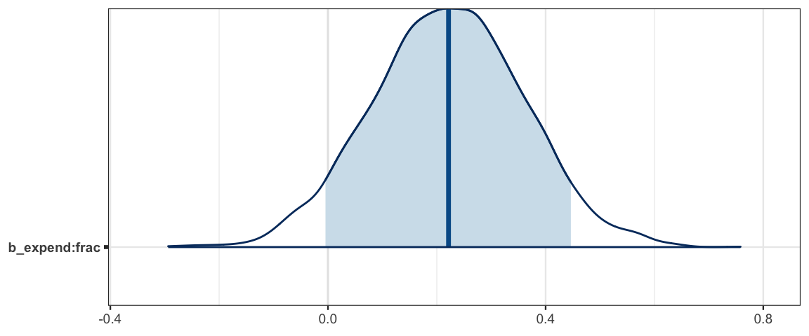
bind_rows(
hdi(posterior(sat3a_stan), pars = "b_expend:frac", prob = .90),
hdi(posterior(sat3a_stan), pars = "b_expend:frac", prob = .95)
)| par | lo | hi | prob |
|---|---|---|---|
| b_expend:frac | -0.0061 | 0.4445 | 0.90 |
| b_expend:frac | -0.0596 | 0.4807 | 0.95 |
If we are primarily interested in how expenditures are related to SAT performance,
one way to deal with this is to think about the slope of the regression line for various
values of the frac variable. By definition, frac is between 0 and 100, and in the data
it spans nearly that full range.
posterior(sat3a_stan) %>%
mutate(
slope20 = b_expend + `b_expend:frac` * 20,
slope40 = b_expend + `b_expend:frac` * 40,
slope60 = b_expend + `b_expend:frac` * 60,
slope80 = b_expend + `b_expend:frac` * 80
) %>%
gf_density(~slope20, fill = ~"frac = 20") %>%
gf_density(~slope40, fill = ~"frac = 40") %>%
gf_density(~slope60, fill = ~"frac = 60") %>%
gf_density(~slope80, fill = ~"frac = 80") %>%
gf_labs(x = "b_frac")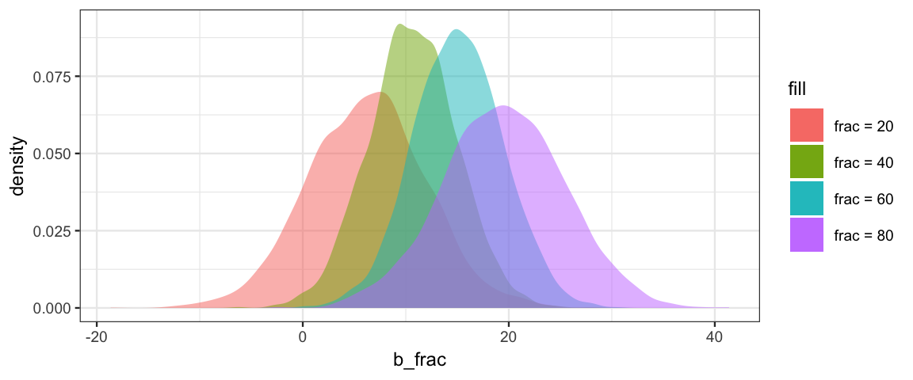
According to this mode, spending more money is definitely associated with higher SAT scores when many students take the SAT, but might actually be associated with a small decrease in SAT scores when very few students take the test. The model provides the sharpest estimates of this effect when the fraction of students taking the test is near 50%.
Here’s another way to present this sort of comparison using 95% HDIs instead of density plots.
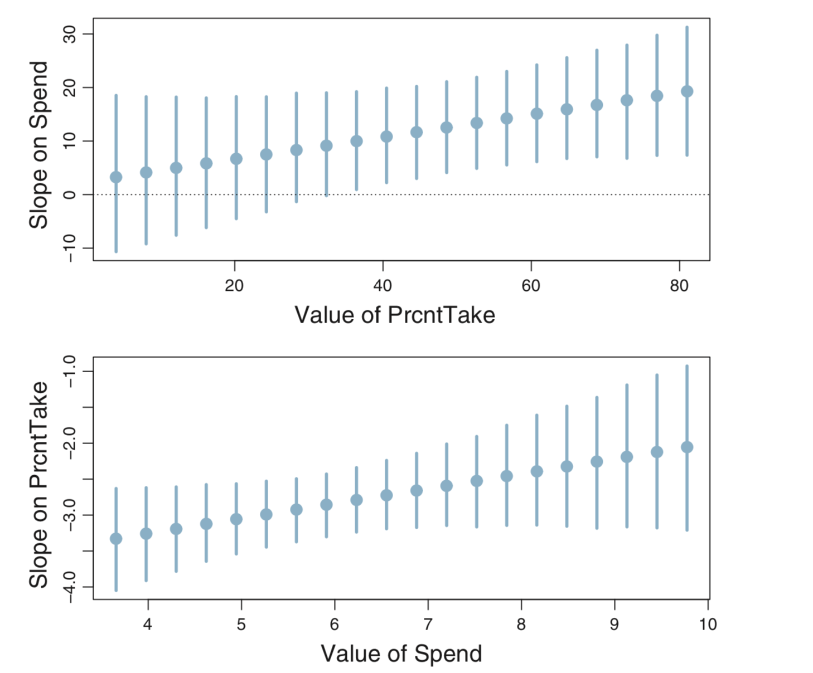
We can create our own version of these plot like this
NewData <-
tibble(
sat = Inf, # trick to get ppc_intervals() to almost ignore
frac = seq(0, 100, by = 4))
y_slope <-
posterior_calc(
sat3a_stan,
slope_expend ~ b_expend + `b_expend:frac` * frac, # note required back ticks!
data = NewData
)
ppc_intervals(NewData$sat, y_slope, x = NewData$frac) %>%
gf_labs(x = "value of frac", y = "slope on expend") %>%
gf_hline(yintercept = 0, color = "red", alpha = 0.5, linetype = "dashed") 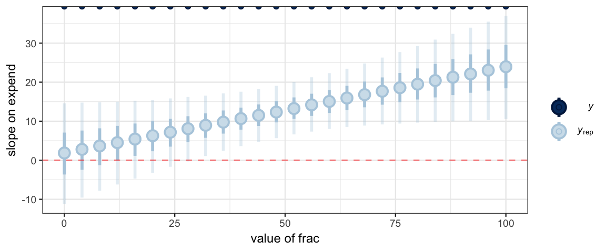
18.4.1 Thinking about the noise
The noise parameter (\(\sigma\)) appears to be at least 25, so there is substantial variability in average SAT scores, even among states with the same expenditures and fraction of students taking the test.
mcmc_areas(as.mcmc.list(sat3a_stan), pars = "sigma", prob = .9, prob_outer = 0.95)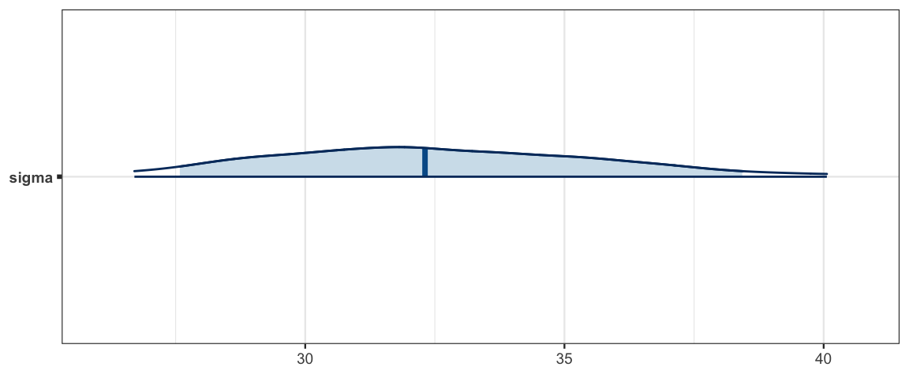
hdi(posterior(sat3a_stan), pars = "sigma")| par | lo | hi | prob |
|---|---|---|---|
| sigma | 24.3 | 38.48 | 0.95 |
18.5 Exercises
Fit a model that predicts student-teacher ratio (
ratio) from ependiture (expend). Is spending a good predictor of student-teacher ratio?Fit a model that predicts SAT scores from student-teacher ratio (
ratio) and the fraction of students who take the SAT (frac). How does this model compare with the model that usesexpendandratioas predictors?CalvinBayes::MultLinRegrPlotUnifcontains a synthetic data set with variablesx1,x2, andy.glimpse(MultLinRegrPlotUnif)## Observations: 400 ## Variables: 3 ## $ x1 <dbl> 6.2482, 0.5470, 6.2820, 0.5085, 2.8241, 4.7502, 5.1439, 5.7114, 8.3594, 2.3522, 4.4224… ## $ x2 <dbl> 6.4130, 6.0560, 8.8629, 4.9334, 2.2763, 7.1172, 5.8876, 3.6913, 7.8148, 0.9905, 3.9044… ## $ y <dbl> 27.73, 22.44, 33.69, 22.53, 17.64, 25.87, 25.98, 25.56, 32.55, 11.50, 22.49, 18.57, 28…inspect(MultLinRegrPlotUnif)## ## quantitative variables: ## name class min Q1 median Q3 max mean sd n missing ## 1 x1 numeric 0.011432 2.482 5.236 7.692 9.996 5.129 2.983 400 0 ## 2 x2 numeric 0.003215 2.433 5.342 7.463 9.985 5.044 2.887 400 0 ## 3 y numeric 4.774219 20.371 25.270 30.435 41.955 25.122 6.808 400 0This is the same data used to make the plots on page 511. The claim there is that the data were randomly created using the formula
n <- length(x_1) y <- 10 + x_1 + 2 * x_2 + rnorm(n, 0, 2)Run a regression model using
x1andx2as predictors fory(no interaction). Use “normal noise” for your model, and \({\sf Norm}(0,20)\) priors for the slope and intercept parameters. How do the posterior distributions compare to the formula used to generate the data? (In a real data analysis situation, we won’t know the “true” relationship like we do here when we simulate the data using a relationship of our own devisig.)Now run a regression model using only
x1as a predictor fory. How do the results compare (to the previous model and to the formula used to generate the data)?Explain why the posterior distribution for
sigmachanges the way it does. (You might like to look at the pictures on page 511.)Now add an interaction term to the model with two predictors. How does that change the resulting posterior?